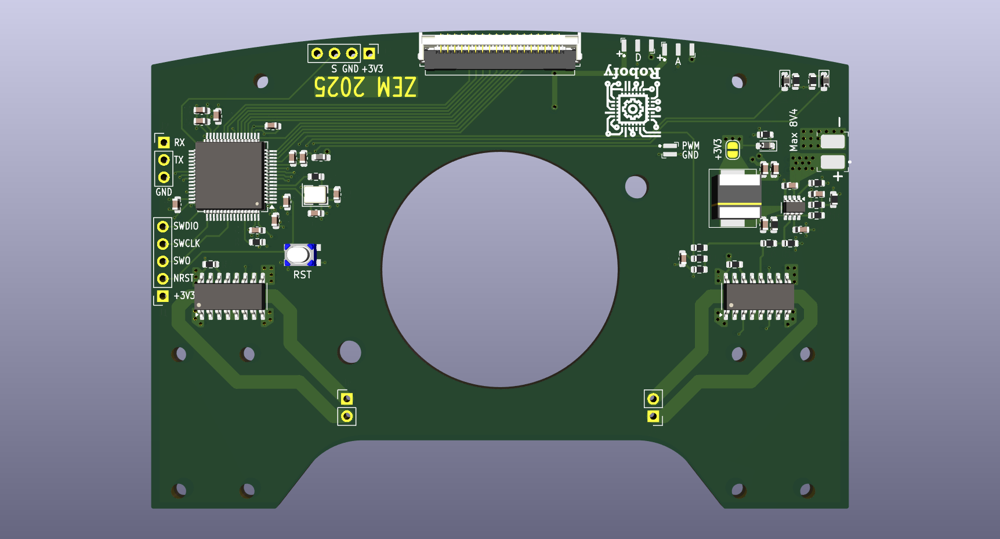
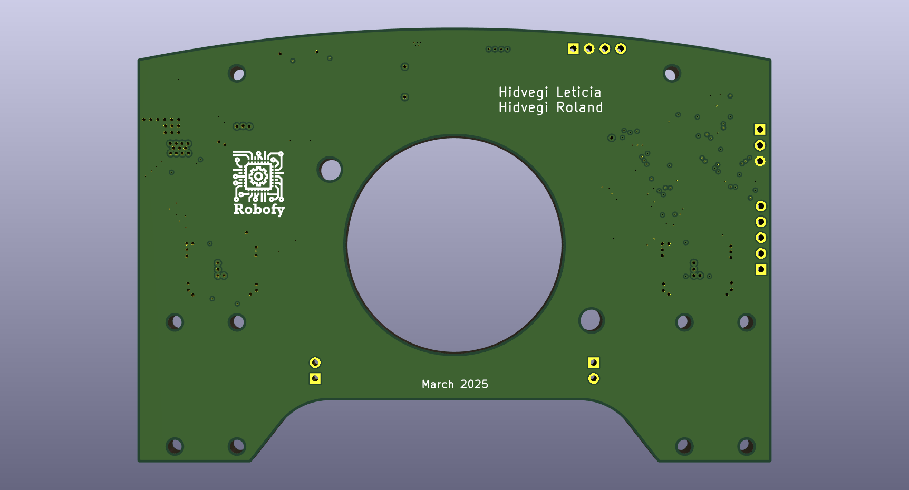
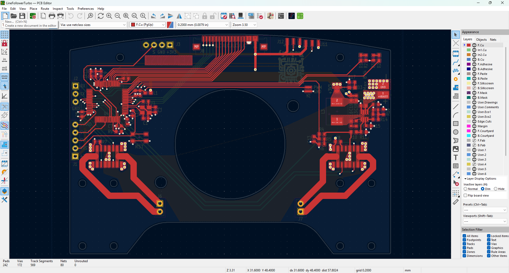
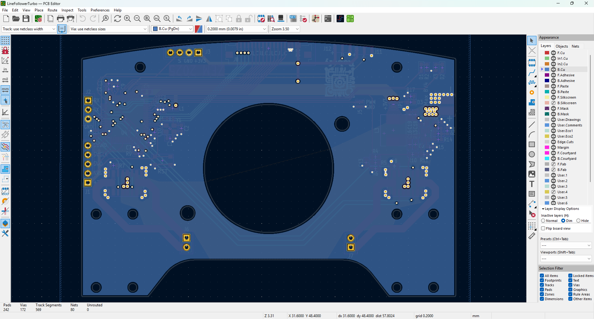
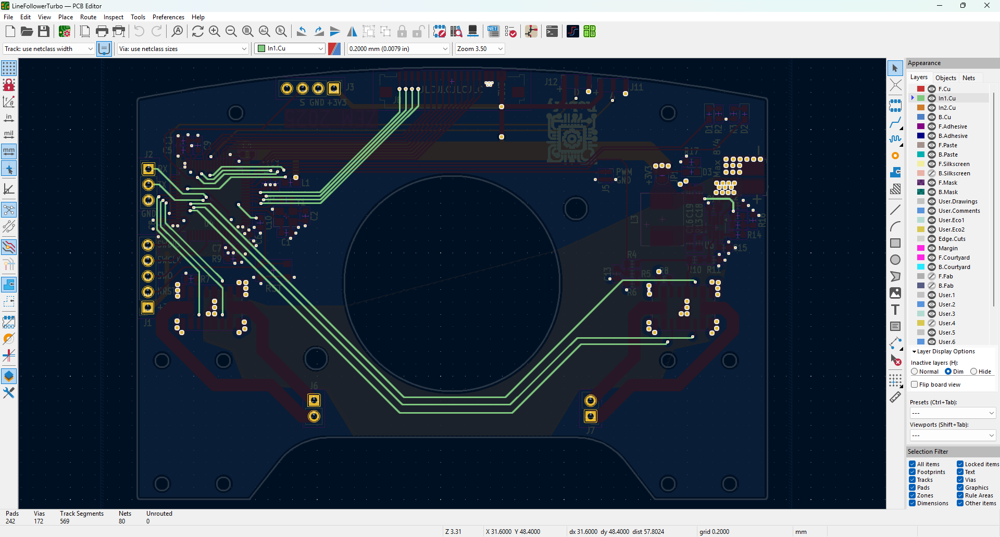
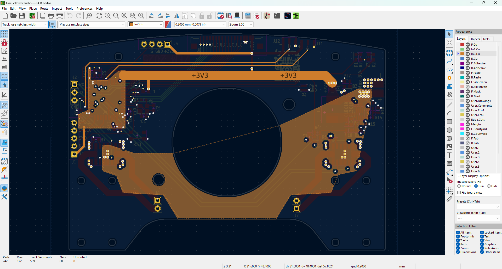
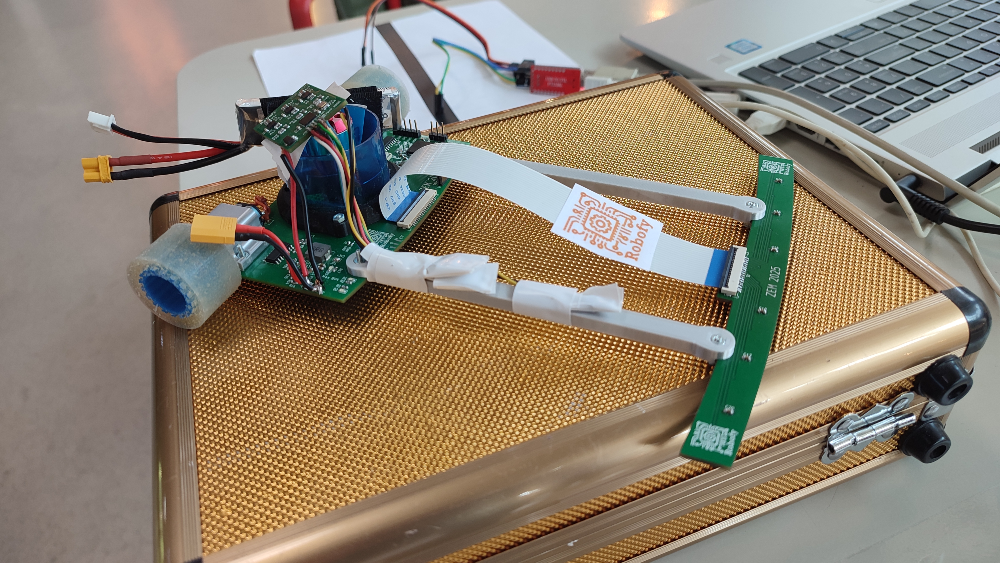

Line Follower Turbo Robot

High-Performance Autonomous Navigation
Description
The Line Follower Turbo Robot is a high-performance autonomous navigation platform designed for the ZEM2025 competition. This main control PCB integrates motor drivers, sensor interfaces, processing capabilities, and power management into a compact, efficient design optimized for rapid line following and competitive performance. The "Turbo" designation reflects its emphasis on speed, responsiveness, and advanced control algorithms.
Key Features
- High-performance microcontroller for real-time control
- Dual motor driver with PWM speed control
- Differential drive kinematics for precise steering
- Multiple motor driver outputs for independent motor control
- Integrated IR sensor array interface connector
- Power distribution and regulation system
- Battery monitoring and protection circuits
- Communication interfaces for debugging and telemetry
- Compact multi-layer PCB design
- Optimized component placement for low EMI
Motor Control System
The Line Follower Turbo employs a sophisticated dual-motor control system enabling independent speed regulation for each drive wheel. This differential drive architecture allows the robot to execute sharp turns and precise trajectory corrections. PWM-based speed control provides smooth acceleration and deceleration profiles, while closed-loop feedback enables adaptive motion control. The motor drivers are optimized for rapid response times to enable high-speed line tracking.






Sensor Integration
The PCB features a dedicated connector for the IR sensor array module, enabling modular sensor integration. The microcontroller's ADC channels process the sensor array outputs with high resolution, allowing precise line position detection. A separate PID controller loop processes the sensor data to generate corrective steering commands. This architecture separates signal acquisition from control logic, improving code maintainability and enabling sensor optimization.
Power Management
The power system includes multiple voltage regulators supplying different subsystems: Main logic voltage for the microcontroller and digital circuits, Motor driver supply with current protection, Sensor module supply with noise filtering. Battery voltage monitoring enables low-battery detection and graceful shutdown. The multi-stage power distribution minimizes ground noise and ensures stable operation during high-current transients.
Control Algorithms
The Line Follower Turbo implements advanced control strategies including:
PID Line Tracking: Proportional-Integral-Derivative control minimizes deviation from the line center
Adaptive Speed Control: Velocity adjustment based on line curvature and robot position
Emergency Response: Rapid reaction to unexpected line interruptions or sharp turns
Performance Optimization: Tuned parameters for competition-grade speed and accuracy
PCB Design Highlights
- Multi-Layer Design: Four-layer board for optimal signal integrity and thermal management
- Component Density: Efficient layout maximizing functionality in minimal space
- Signal Integrity: Careful routing to minimize EMI and crosstalk
- Thermal Management: Proper heat dissipation for sustained high-performance operation
- Modular Architecture: Connector-based interfaces for easy sensor and peripheral integration
Competitive Specifications
- Response Time: Sub-millisecond sensor-to-motor latency for rapid corrections
- Maximum Speed: Optimized for high-speed line following capabilities
- Tracking Accuracy: Precise line adherence even at maximum velocity
- Power Efficiency: Minimal energy consumption for extended runtime
- Reliability: Robust operation across varied competition environments
Tools & Technologies
EDA: KiCad
Design: Schematic capture, PCB layout, four-layer board
Microcontroller: High-performance ARM processor
Motor Drivers: High-current PWM drivers with protection
Signal Processing: Real-time sensor data acquisition and filtering
Control System: PID-based line following algorithms
Manufacturing: Professional PCB fabrication
Competition: ZEM2025 Line Follower Category
Development Process

The Line Follower Turbo evolved through multiple design iterations, incorporating feedback from competition testing. Each version refined the control algorithms, optimized the motor driver performance, and improved sensor integration. The modular design allows for quick updates and adjustments without requiring major PCB redesigns. This iterative approach has resulted in a highly competitive platform that balances performance, reliability, and maintainability.